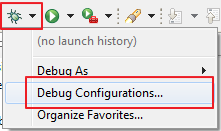
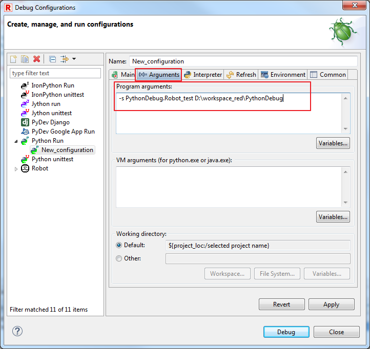
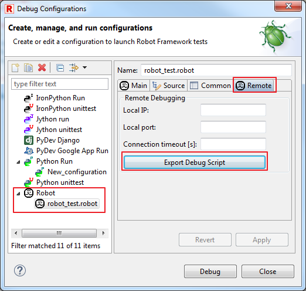
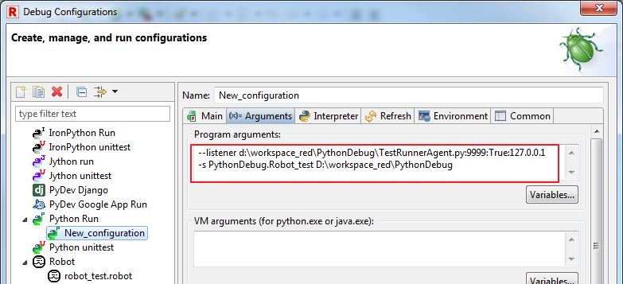

Debug Robot & Python scripts
This article provides tutorial how to setup debugging of Python scripts
while running Robot test cases.
For basic Robot test case/keyword debugging, please refer to
Debug topic.
Requirements
Installed PyDev with RED - Robot Editor. This is necessary to be able to run and debug Python scripts
within Eclipse. See PyDev installation instruction.
Debug Python scripts while running Robot test case
In general, to allow debugging Python scripts while running Robot
test cases, you need to setup Python debug execution in such way that
Python interpreter will execute Robot runner with suite with enabled
Python debugger.
This will trigger any Python script's break point during
Robot runtime.
Instructions:
- Include project path in PYTHONPATH environment variable.
This can be done by editing variable on OS level or using PyDev Preferences:
Windows -> Preferences -> PyDev -> Interpreters ->
Python under Libraries
- Open Debug Configurations:

- Edit or create new Python Run configuration:

- Provide Project to be debugged, together with path to Robot
runner run.py:

- In Arguments tab, provide arguments passed to run.py for
Robot execution.
This is the list of test cases/whole project to be included
during Debug.

If you are uncertain what should be included, try to run Robot
test case and check console:

- Apply and Close/Debug.
Running such Debug configuration will start Python debugger.
Remember to place at least one breakpoint inside Python script.
Simultaneously debug Python scripts and Robot test cases
This is combination of running Python Debug with Remote Debug of Robot
test cases.
In essence, there needs to be two RED/Eclipse instances - one
instance is running Python Debug with modification which allows to
connect RED as Remote Debug.
This way in one instance (in this case it does not need to be
Eclipse, any Python env with proper debug&Robot remote arguments)
Python debug can be provided, remote RED instance is providing Robot
debug functionalities.
Using 2 Eclipse instances:
Eclipse with Python Debug
- Open Debug Configuration
- Create or edit any of Robot Debug Configuration to export TestRunnerAgent.py
script
TestRunnerAgent.py is a script to allow remote RED instance to
connect to running Robot.

- Edit Python Debug Configuration: in Arguments include remote
listener
Remote listener allows to connect RED instance to running
Robot execution which will be provided on this Eclipse instance:
--listener
<PATH_TO_TESTRUNNERAGENT.PY>:<LOCAL_PORT>:TRUE:<LOCAL_IP>
- Note
- Arguments are position sensitive. Port number should be
selected with care - for Windows Vista and above port should be in
ranges 1024-5000 and 49152-65535

- Apply & Close
RED/Eclipse with Robot Debug
Running Python & Robot debug
Start Robot Debug instance first than start Python Debug one.